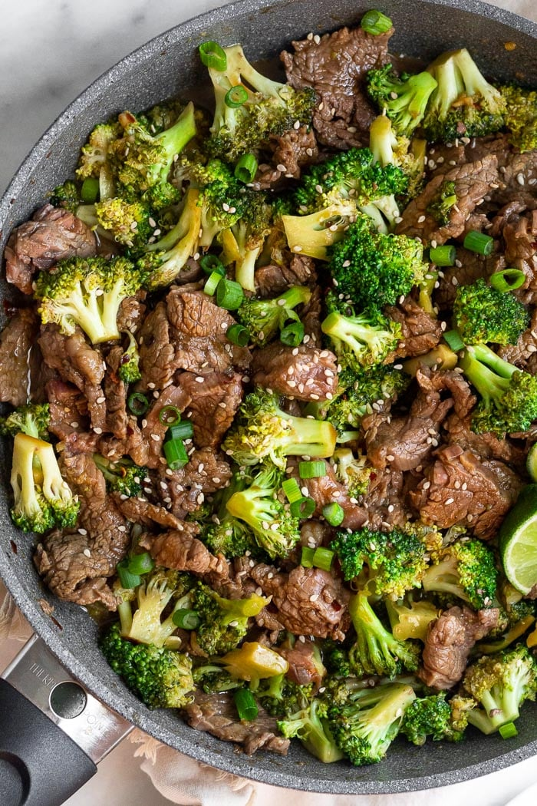

Slow Cooked Beef and Broccoli

Description
Here is a recipe for beef and broccoli which can serve up to 4! With little effort to make as well! It does require a slow cooker, just to warn you!
Ingredients
- 1 beef bouillon cube
- 1 cup warm water
- 1/2 cup soy sauce
- 1/3 cup brown sugar
- 2 garlic cloves, minced
- 1 tablespoon sesame oil
- 1 1/2 pound beef sirloin, cut into small strips
- 2 tablespoons cornstarch
- 2 pounds broccoli florets, or to preference
- 2 cups cooked rice
- 1 tablespoon sesame seeds (optional garnish)